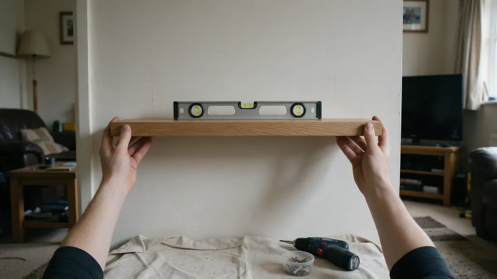

Generated photoWhat this coversOn the list
- Floating and bracketed shelvesLevelled, set out so the spacing looks right from the doorway, and fixed into something that will hold them.
- Televisions on bracketsFlat, tilting and pull out arms. Height set from where you sit rather than where the old one was, and the cables tidied.
- Curtain poles and tracksIncluding bays, where the brackets have to line up across three faces and the pole has to clear the opening.
- Blinds in and outside the revealRoller, Venetian and vertical. The reveal gets measured in three places because almost no window is square.
- Mirrors, pictures and heavy framesHung level and fixed properly, with the right fixing for a heavy frame on a hollow wall.
- Coat rails, rails and grab railsAnything that gets pulled on, which means the fixing matters more than usual.
What goes elsewherePassed on
- Running power to the TVA socket behind the television is an electrician's job. We can fit the trunking and feed an existing cable through it.
- Fixing into a chimney breast flueIf a breast is still live we will say so rather than drill into it.
- Anything on a wall we cannot readIf we cannot work out what is behind it, we will stop and tell you, not chance it.
Drawn, not photographed
Where the weight actually ends up
Same shelf, same bracket, same weight on it. The only thing that changes is what is behind the plaster, and that changes everything about the fixing.
Plasterboard on dabs
Plaster straight on brick
Knock first
A solid wall sounds dull and dead. A hollow one sounds like a drum, and if it sounds like a drum there are two things it might be: a stud wall with timbers behind the plasterboard, or plasterboard stuck to a solid wall on dabs of adhesive, with a gap behind it.
Round here, postwar semis and anything refurbished in the last thirty years are usually dot and dab. Older terraces are usually solid plaster straight onto brick. That is a rule of thumb rather than a rule, which is why we check rather than assume.
Why dot and dab catches people out
A short screw into dot and dab is holding twelve millimetres of plasterboard and then nothing at all. It will take a picture. It will not take a shelf with books on it, and it certainly will not take a television on an arm, because an arm multiplies the pull at the top fixings every time you swing it.
There are two honest answers. Either a fixing designed for hollow board, which spreads the load across the back of the board, or a fixing long enough to go through the gap and into the masonry behind. Which one depends on the weight and on how deep the gap is, and the gap is not the same in every house.
Studs
On a timber stud wall the uprights are the only thing worth fixing into for anything heavy. A detector finds them, and so does a careful tap and a small pilot hole in a spot that will be hidden. Fixing a television bracket to board alone between two studs is how brackets end up on the floor with the television.
Height, and the thing nobody thinks about
Televisions get hung too high, almost always. Sit where you actually sit, look straight ahead, and the middle of the screen wants to be about there. A television over a fireplace looks tidy and gives you a stiff neck for five years.
Questions
About this sort of job
How do I know what my wall is?
Knock it. Dull and solid, or hollow. If it is hollow we will find out which kind of hollow before anything is drilled.
Can you hide the cables?
We can run them in surface trunking and paint it in, or feed them through an existing route. Chasing cables into a wall is an electrician's job.
Will you fit a bracket I already have?
Yes. Have the fixings pack with it if you can, though we carry plenty of alternatives.
Put it on the list
Send the room, the thing and what is wrong with it, and we will tell you what fits in a visit.